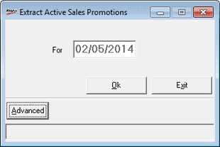
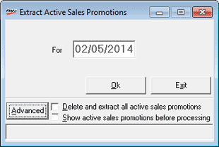

This option is used to update/ refresh the promo definitions at POS, if you suspect that relevant promo is not getting applied during billing. This may happen due to addition of new items to currently running promo schemes or when new promo details are sent from HO after day opening.
How to reach: Housekeeping > Data Import > Active Sales Promotions
The Extract Active Sales Promotions window is as shown.

For: Displays the date (Shoper date) of extraction. This cannot be changed.
Advanced: Click to specify how to update the promos.

Delete and extract all active sales promotions: Select to delete all existing sales promo schemes available at POS and repopulate with the active schemes.
Show active sales promotions before processing: Select to display all active sales promotion schemes before extracting them.
Note: If you click Ok without selecting Advanced, the discrepancies existing in the Sales Promo schemes are identified and rectified automatically.